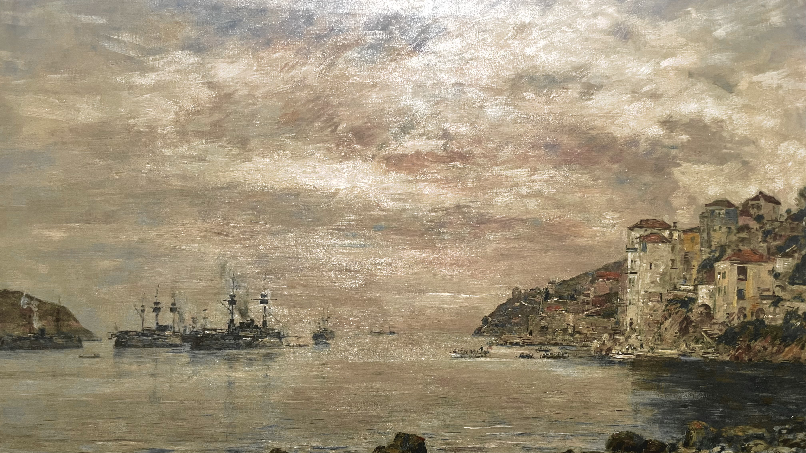

DÉDAL DES COULEURS
Paul DECHEWSKY
Paul DECHEWSKY
La rade de Villefranche-sur-Mer, 2004
Paul DECHEWSKY
La Rade de Villefranche justifie encore le surnom de “roi des ciels” que lui a decerné Corot.
Toute l’attention de Dechewsky se porte sur les effets de l’eau se mariant au ciel dillaté et immense et à l’évanescence des nuages, dans une quête toujours renouvelée de captation de la lumière.